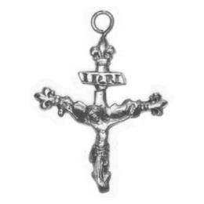

Catalog › CE-0044 · LOV1999-38
Cruce pectorală cu Hristos răstignit și inscripția INRI
ultima treime a sec. XIV (1367–1400) · Körmend, grădina castelului, Vas (Kom.), Ungaria · Muzeul Național Maghiar, Budapesta, inv. Cim.Sec.II.XV.10 (reinventariată 55.375.C)
pectoral cross, bronz; ultima treime a c. XIV (1367–1400); found at Körmend, grădina castelului, Vas (Kom.), Ungaria; kept at Muzeul Național Maghiar, Budapesta.


Identificare
- Categorie
- Cruce pectorală simplă
- Material
- Bronz
- Tehnică
- Turnare în relief; Gravare (incizie); Aurire
- Dimensiuni
- Î 50 × L 37 mm
Iconografie
- Avers
- Răstignirea (Hristos cu perizoma)
- Descriere avers
- Brațul transversal cu ramuri în pantă, terminate în crini; pe brațul de sus, o tăbliță cu literele INRI. Hristos turnat odată cu crucea, capul căzut pe umărul drept, păr lung ondulat, ochii închiși, brațele îndoite în sus, degetele întinse, perizoma bogat faldurită, picioarele puse una peste alta și străpunse de un cui.
- Descriere revers
- Pe placa din spate, o ureche de agățare din sârmă, lipită.
- Inscripții
- INRI
- Limba
- Latină
Datare și atribuire
- Datare
- ultima treime a sec. XIV (1367–1400)
- Centru
- Atelier local
Descoperire
- Localitate
- Körmend, grădina castelului
- Regiune
- Vas (Kom.)
- Țară
- Ungaria
- Context
- Tezaur
- Anul
- 1812
- Coordonate
- 47.0161° N, 16.5981° E
- Precizia locului
- Doar localitatea
Păstrare și referințe
- Colecție
- Muzeul Național Maghiar, Budapesta
- Nr. inventar
- Cim.Sec.II.XV.10 (reinventariată 55.375.C)
- Bibliografie
- Zs. Lovag, Mittelalterliche Bronzegegenstände des Ungarischen Nationalmuseums (Catalogi Musei Nationalis Hungarici, Series Archaeologica III), Budapest, 1999, p. 31, cat. nr. 38, reprodusă la Abb. 38 (planșele, p. 136). Bibliografie citată în sursă: Vattai 1956, 69, Taf. X. 16; Kolba 1982, 304, Abb. 158 d; Zsámbéky 1983, 114, Abb. 20; Kolba 1987, 373, Abb. 829.
- Figura
- Abb. 38
- Planșe
- Lovag 1999, planșele, p. 136
- Observații
- Datare după Lovag: ultima treime a sec. XIV. XIV. Găsită în 1812, ca parte a unui tezaur mai mare, în grădina castelului Körmend; ducele Fülöp Batthyányi a dăruit-o muzeului în 1814. Tezaurul conținea peste 300 de monede de argint din sec. XIV, cinci vase de argint, douăsprezece inele, o pecete, plăci de argint aurite, nasturi și două cure de argint. Crinii de la capetele brațelor inferioare sunt rupți. Coordonate: ale localității (aproximative), nu date în sursă.
Citare: Corpus Encolpiorum, CE-0044, Cruce pectorală cu Hristos răstignit și inscripția INRI, --root/piese/LOV1999-38/ (accesat 2026-10-20).